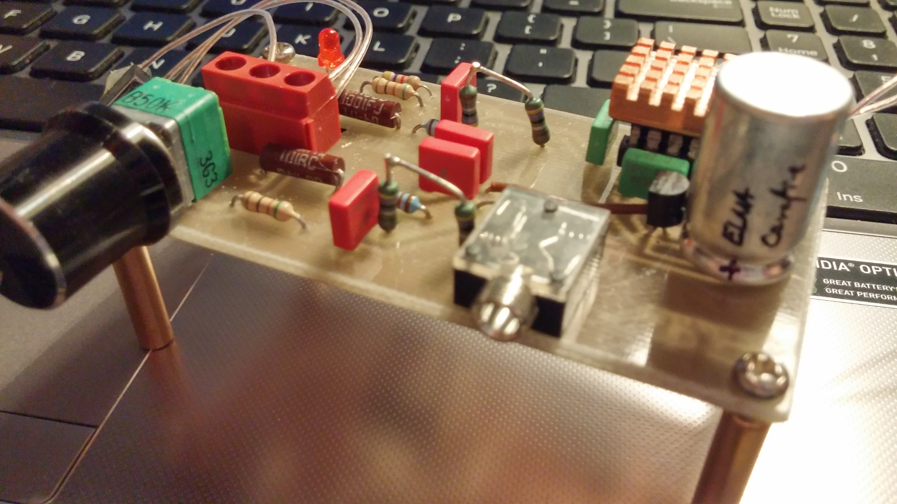
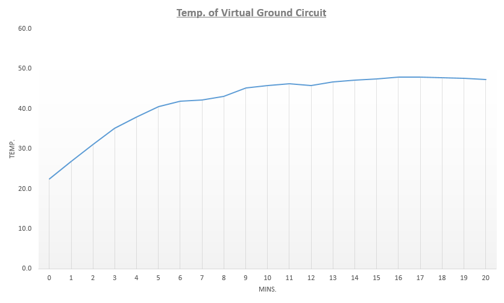
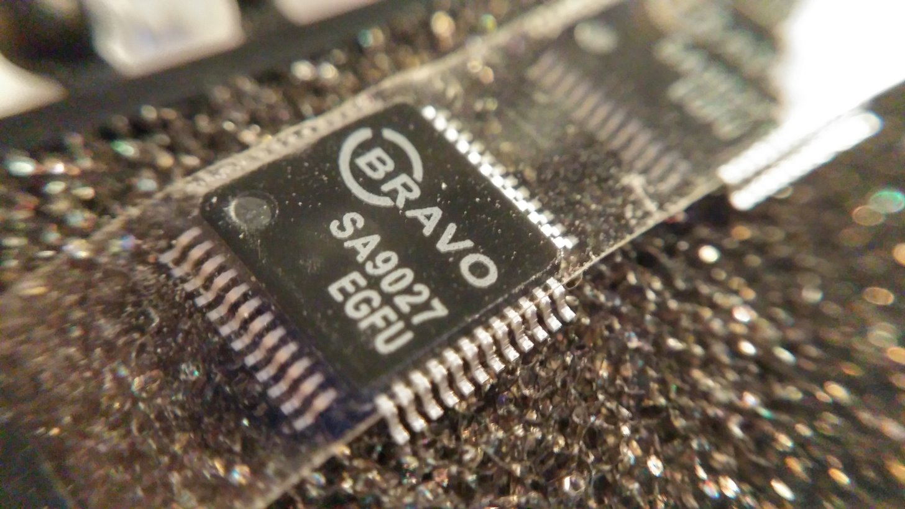
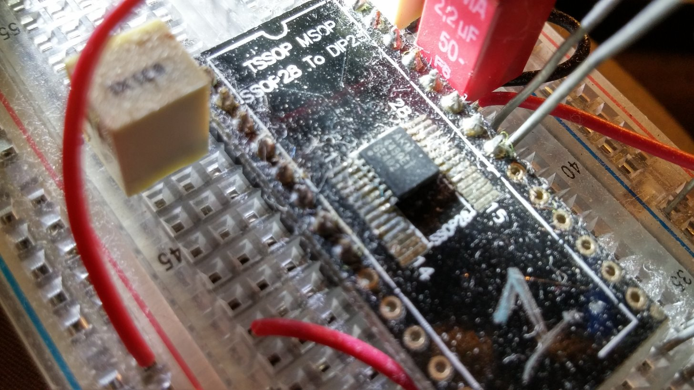
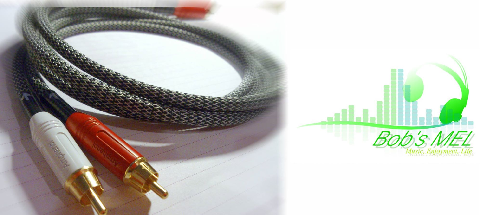
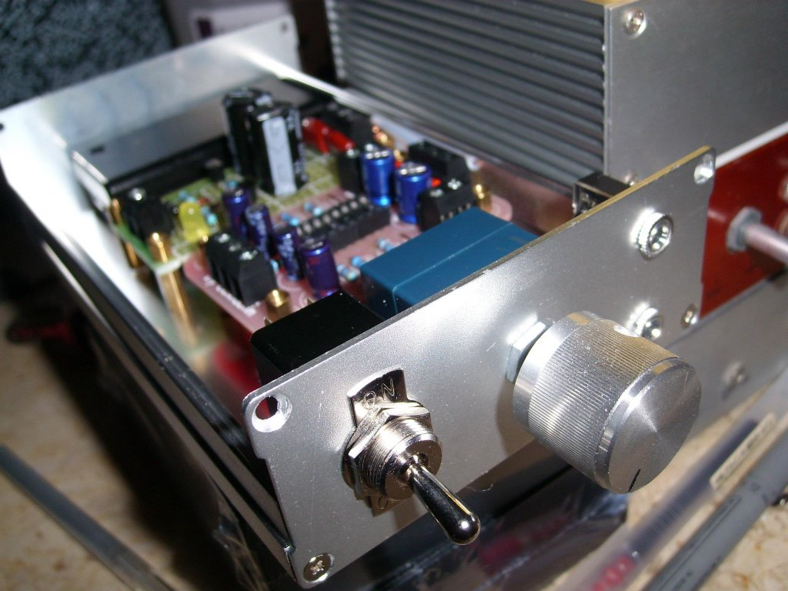
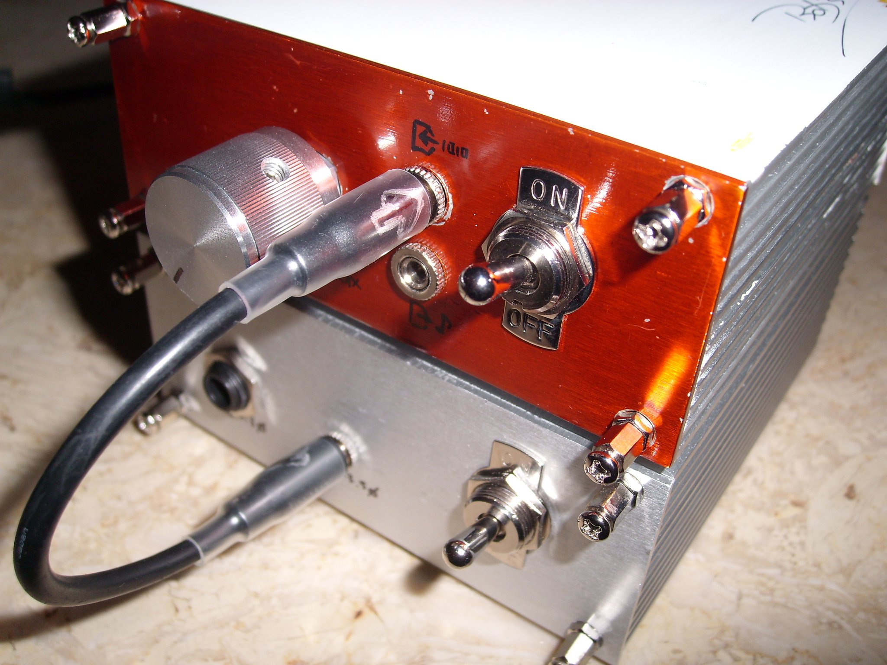
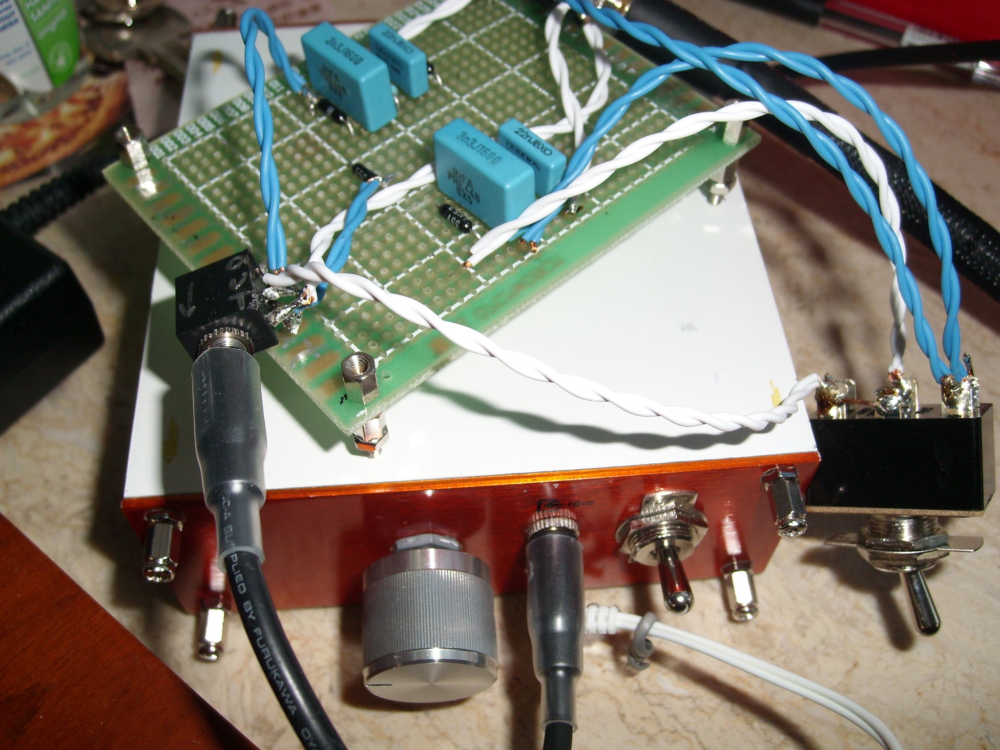
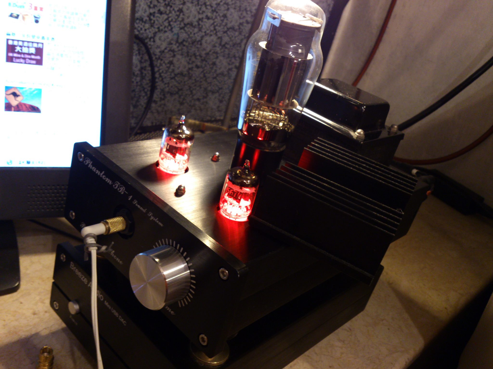

Welcome to the ePortfolio Page!
This is where Bob's, or Bob's MEL works in the past 6 years are shown.
Past Projects and Experience
(Prototype Created) TPA6120 Headphone Amplifier (Redesigning In progress)
The first prototype was built and tested in Feb., 2016, albeit without success. Both channels reproduced the music with heavy noise. The left channel also occasionally shuts down on its own.
Having found that the power supply section was flawed and cannot provide sufficient current to the TPA6120, I switched to use an NJM4556 Op-amp in series with the TLE2426 vitual ground IC to boost the current output of the ground channel.
This 2nd version is built successfully. Equipped with a current-feedback architecture it seems to have a more clear sound than ordinary audio single-ic design.
This design will later be modulized and put on a smaller board to form a fully modulized portable DAC, along with the SA9027 project below.

(29/3/2016 update)
With the arrival of the TM902 thermometer, the temperature of the virtual ground part is tested.
The graph below shows that the temperature stablizes at about 49 ℃. While this can be acceptable as long as the power dissipated is within the absolute maximum value given by the datasheet, extra care should be taken in future implementation if the same circuit are to be applied in portable amp, where the interior of the chassis can be tight and ventilation is inadequate.
(Room Temp. Under Test: 19.9 ℃.)

(Present) DIY Discrete Operational Amplifier for Audio purposes (In progress)
Traditional operational amplifier features high gain input-stage and low-power class AB output stages. While these attributes are sufficient for most low frequency analog design, the low-impedance load driving capability seemed to be insufficient for headphone amplifier application.
Perhaps most consumer-grade headphones are rated for 32 Ω or well below 100 Ω. General purpose op-amps usually provide optimal driving power at 600 Ω, which can inflict impedance mismatch.
The Japanese reference link below enlightened me to create my own op-amp for such purposes. The actual gain might be lower in these customized op-amp than traditional FET-input devices, the output impedance may, nevertheless, be much lower and capable of driving headphones. These types of specialized op-amps can also be designed as a substitution for normal op-amps.
(Reference: Innocent Key)
(Present) DIY Jung Super Regulator (In progress)
Power supply ccan significantly affect the performace of an amplifier or DAC. With the Jung Super Regulator design it is believed that the PSRR can be higher than normal LDO ICs.
Recently the LM329 Precision reference and AD817 was used in the testing. The test of ripple and noise will be continued later.


Reference: Tangentsoft.com
(Present) DIY SA9027-PCM5102 USB DAC (In progress)
SA9027 is a 24bit USB audio decode chip produced by SAVITECH. This next project is designed to be the successor of the PCM2706 DAC module.
In the stage of implementation, the necessary components were purchased and the prior researches are still in progress.

A low-cost AKM4430 DAC modulized External I2S DAC Card is included in this project.

(2015 - 2016) DIY FET-input Differential Headphone Amplifier
Tired of building single op-amp headphone amplifier,I had been motivated to look for designing a discrete amplifier. Although single IC amplifier can be simple to establish and often offer low-cost solutions, using discrete parts can grant a specialized design that fit the requirements and offer better load impedance matching.
(Inspired by op316.com)


(2015) DIY Wooden Headphone (w/ 42mm speaker unit)
A new DIY headphone for audio testing purposes. The casing and the speaker units are purchased in the mainland China market.
The speaker unit is rated at 54 Ω. It features a large port for acoustic tuning. Covering the port with hgh-density wool can reduce the bass significantly. This tuning design is particularly fun to experiment with as a DIYer.

(2015 - 2016) DIY Audio Creation Triple-C Headphone Cable

(2015) DIY OCC Earphones Cable (w/ MMCX connector)

(2015) DIY PCM2706-TDA1543 USB DAC (w/ passive I//V stage)


A PCM5102 modulized External I2S DAC Card was also designed along with the project.
It turns out to have a smoothier, softer sound than TDA1543. The TDA1543 still excels in reproducing punchy bass and lower human voice.

(2014) DIY Sommer Albedo MkII RCA Cable
Yet another inexpensive cable that reproduce superb price for its cost. This RCA cable is used to connect the DAC analog output to my computer and is still used today in my CAS setup. The cable sounds slightly more vivid to the Galileo but it can be difficult to tell which is superior.
The nylon sleeves added here provide a clean appearance.

(2014) DIY Sommer Cables Gailieo RCA Cable
A good sounding pair of cables that is priced reasonably. This was used in the CD -> Amplifier signal path. The sound of the cable is generally neutral.

(2013 - 2014) DIY 12AU7-IRF510 Headphone Amplifier
This is perhaps my largest scale DIY project in a while. The project lasted for 1 year and technically the improvement on it is not ended.
From PCB preparation to the drawings and design of the aluminum chassis, I have learnt much from the Cadsoft Eagle PCB and solidworks.
While the very first prototype was assembled successfully, a hint of thermal noise reminded me to pay extra attention to the heat sinking and routing design.
Eventually, another version with almost no noise(the one in the photos) were installed and the tube lit up the Christmas at that year.


(2013) DIY Szekeres Class A headphone Amplifier
(2013) DIY Sijosae Virtual Ground Circuit
The circuit was used to replace the resistor divider in the previous CHA47 amplifier. The class AB output stage provides a better current output capability.

(2012 - 2013) DIY CHA47 Headphone Amplifier + Ohman’s Crossfeed Filter
Arguably the first complete amp project that is more than just purchase PCB and do the soldering)
The painting on aluminum chassis was quite time-consuming. Several thin layers of metal primer were needed to be applied onto the surface before the color was sprayed.
The copper layer of the PCB was also routed using delicate silver-plated cables in a point-to-point manner. (Thanks to Sijosae schematics and point-to-point hints)
Although the amp was later replaced by the PCB-based version, this first amp is still carefully preserved until today.


(2012) DIY 6N3-6080 Class A Tube Headphone Amplifier
Interested in making headphone amplifiers, this 6N3-6080 amp is the second beginner kit I have purchased and built when I first entered the world of electronics.
Although at that time I have little background on tube amp, the project was overall fun.
With the pre-drilled case and PCBs, the tube amp was completed at one night and the result was astonishing.
The thrill of completing this audio project allured me to go further into the world of audio electronics.

Who am I?
I am Bob Chong, an undergraduate student in the Electronics and Information Engineering degree in Hong Kong Polytechnic University. Interested in Electronics and feeling comfortable working in the audio aspects of the discipline, I started building RCA cables and amplifiers since I was in high school. (Feb., 2011)
My recent projects include SA9027 modulized USB DAC (modulized design is inspired by pavork.org) and discrete operational amplifier for audio purposes. (Reference: Innocent Key)
What makes me start DIY?
Back then when I was an ordinary secondary school student I was going to purchase a headphone amplifier to drive my Audio-Technica A900 closed-back headphones. I attempted to purchase one and had the plan suspended since I found that a decent quality amp would be priced for at least HKD$2000 at that time.
Knowing that building one may have much more fun than straight up buying one, I started to learn basic electronics and soldering with notes provided by my physics teacher in high school. This is how I started the DIY projects back in 2010 and 2011.
It would be a pleasure for me to purchase different kinds of amateur electronics kits and assembling them in the weekend. Despite having few creative elements involved, I had built up passion towards analog electronics and electroacoustics through soldering the components and grasped the basic knowledge before I attended the higher diploma courses in electronics engineering.
In last year, I succeeded in my 2nd trial to build my first USB DAC using PCM2706 and the antique yet good-sounding TDA1543. This is when I have started to expand my interest beyond analog electronics.